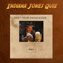

Hi, I'm Maya.
I'm a full-stack developer.
I knew I had to become a web developer when I realized it was the happy marriage of my two great loves: precision and creativity. Technicality meets art...now that is what I call bliss.
When I'm not coding, I can be found at the piano doing more precise, creative stuff or looking for the best dim sum joint in town.
My work.
Indiana Jones Quiz
This quiz will test your knowledge of the iconic series and give you feedback on your level of expertise.
HTML | CSS | JavaScipt | jQuery